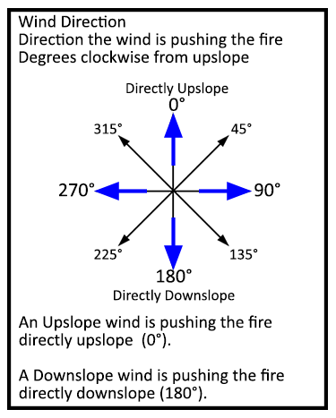

|
Direction of Wind Vector (from upslope) |
Direction of the wind vector measured in degrees from upslope is the direction that the wind is pushing the fire. This is useful in examining the combined influence of wind and slope on surface rate of spread, particularly when wind and slope are not in alignment.
Alternatively the user can select the option to specify wind direction as the direction from which the wind is blowing. Ensure that the wind direction is specified correctly on the worksheet, since the two methods of specifying wind direction are quite different from each other.
| I/O | Module | If | Notes |
| Input | SURFACE | If Wind is in specified directions and if Wind and spread directions are degrees clockwise from upslope (direction the wind is pushing the fire) are selected as input options. |
|
| Output | None |
|  |